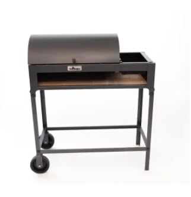
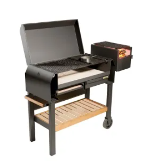

PARRILLA CHULENGO PORTÁTIL CON RUEDAS
Parrilla Chulengo Tromen portátil con Ruedas en trozos enlozados desmontables, con protección en lateral y espalda
PARRILLA PORTATIL CON RUEDAS GAUCHA
El modelo grande de la nueva linea de parrillas Tromen. Con cajón calentador de pan y fogonero integrado para distribuir fácilmente las brasas. Esta parrilla portatil gaucha tiene un tamaño ideal familiar y cuenta con 4 ruedas para poder moverla fácilmente. Ideal para un patio, jardín o un balcón. Cuenta además con tapa para poder generar un efecto horno en las comidas y también proteger del viento
PARRILLA PORTÁTIL A CARBÓN O LEÑA CON RUEDAS
Entre sus prestaciones, se reconocen diversas funciones a estas parrillas de carbón durante la cocción de los alimentos, como el panel de parrilla para asar carne con dos alturas de cocción, el espacio grill destinado a carnes y achuras, la disponibilidad de una plancha para verduras y quesos, un cajón calentador para platos, bandeja corrediza y desmontable para corte, fogonero y la tapa para el calor envolvente en la preparación del asado
ASADOR CRIOLLO GRANDE TROMEN DUOMO
Dominar el fuego con este duomo es un arte, en este asador que se compone de 2 parrillas y 1 plancha que se puede girar o sacar con un asador en cruz para corderos, costillares o lo que se te ocurra, con su leñero en el centro para tener brasas y llama para cocinar, todo con una gran capacidad, tus fiestas en el Duomo serán todo alegrias
TROMEN DUOMO 380
Tromen Duomo 380, una parrilla /leñero que te acompañara allá donde quieras hacer un fuego, que te vas a la montaña, pues al maletero del coche que cabe por su reducido tamaño y en un momento tienes para hacer un fuego al aire libre con su parrilla enlozada incluida, no esperes mas es una estupenda elección.
HORNO TORMEN A LEÑA PARA MESADA TRH-L MIDDLE
El horno a leña TROMEN de calor envolvente actualmente reemplaza a los tradicionales hornos de leña hechos de barro principalmente por la ventaja del fuego continuo.
Fabricado en placas de acero y chapa
Cámara de cocción enlozada
Piso de la cámara de cocción de tejuelas refractarias (ideal para la cocción de pizza a la piedra)
Bandeja y parrilla en acero inoxidables (ideal para cocción de carnes).
Puerta de placa de acero con vidrio que soporta altas temperaturas y pirómetro (Indicador de temperatura)